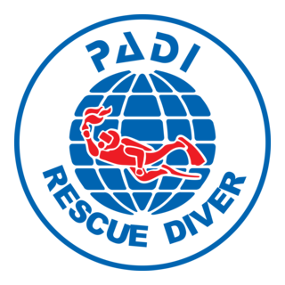

Le cours qui change vraiment un plongeur
Apprendre à anticiper, à réagir, à porter secours. La formation la plus citée par les plongeurs comme "celle qu'ils ont préférée".
De plongeur autonome à plongeur sécurisant
Jusqu'à l'Advanced, vous apprenez à vous sauver. Au Rescue, vous apprenez à sauver les autres — et surtout à anticiper les problèmes avant qu'ils n'arrivent.
C'est exigeant physiquement (remorquage en surface, sortie d'eau d'un plongeur inconscient, insufflations en remontée) et mentalement. C'est aussi la formation la plus marquante de tout le cursus loisir. À l'arrivée : un plongeur transformé, lucide, qui sait dire stop, gérer le stress de sa palanquée, et porter secours en attendant les secours médicalisés.
Le cours inclut systématiquement l'EFR (Emergency First Response) : secourisme adulte et enfant, RCP, utilisation du défibrillateur. Une compétence utile bien au-delà de la plongée.

📷 Nir HimiCe que vous apprenez vraiment
EFR Primary Care
Évaluation de la scène, bilan, RCP, utilisation du DEA, hémorragie, choc.
EFR Secondary Care
Examen secondaire, premiers secours pour blessures non vitales, immobilisation.
Auto-sauvetage
Gestion de votre propre fatigue, crampes, équipement défectueux. Le pré-requis du sauvetage d'autrui.
Reconnaissance du stress
Identifier un plongeur en difficulté en surface ou sous l'eau, avant qu'il ne panique.
Gestion du plongeur en panique
Approche, contact, calmer, remorquer un plongeur paniqué en surface — sans devenir vous-même une victime.
Plongeur inconscient sous l'eau
Remontée contrôlée avec insufflations, gestion de la flottabilité d'une victime inerte.
Plongeur inconscient en surface
Sortie de l'eau, RCP, oxygénothérapie, alerte des secours, communication avec le DAN.
Plongeur disparu
Procédures de recherche, schémas en U et expansion carrée, gestion du timing.
Scénarios complets
Deux mises en situation totales en fin de stage, avec incidents enchaînés. Aussi épuisant que satisfaisant.
Inclus
- ✓ eLearning PADI Rescue Diver
- ✓ Cours EFR Primary & Secondary Care complet
- ✓ Mannequin RCP, défibrillateur, attelles, bouteille d'oxygène pédagogique
- ✓ 10 exercices techniques + 2 scénarios
- ✓ Matériel plongée et transferts
- ✓ Double certification : PADI Rescue Diver + EFR (valable 24 mois)
Prérequis
- ● PADI Advanced Open Water Diver (ou équivalent Niveau 2)
- ● Avoir 12 ans minimum
- ● Formulaire médical, condition physique correcte
- ● EFR (Primary & Secondary Care) à jour — sinon inclus dans le pack
Tarif
Rescue + EFR, formation complète 3-4 jours.
Rescue seul (EFR déjà validé) : 450 €
Réserver mon RescueL'étape suivante : Divemaster
Le Rescue est le prérequis indispensable au passage au niveau professionnel.
Découvrir le Divemaster